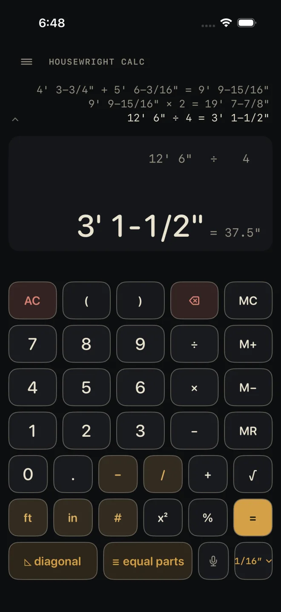

Dimensional Calculator
What it's for
Adding, subtracting, multiplying and dividing tape-measure dimensions without converting anything in your head. You type feet, inches and fractions as you read them off the tape and get the answer back the same way, with the decimal inches beside it. The math is exact; rounding happens only in how the answer is shown. It does not check code — it is the calculator the app opens on.
Step by step
Two boards end to end: 4' 3-3/4" and 5' 6-3/16".
 1
2
3
5
1
2
3
5
- 4 ft — the feet of the first board.
- 3 – 3 / 4 — the inches, the dash, then the fraction. The dash key is what separates whole inches from the fraction.
- +
- 5 ft 6 – 3 / 1 6 — the second board.
- =. The display reads 9' 9-15/16".
The answer stays live. Press an operator and keep going from it, or start typing a new number to begin a fresh sum. The full rules for typing are in Entering feet, inches and fractions.
The bottom row

1 2 3 4- ◺ diagonal — rise, run and diagonal. Enter any two and the third is solved. USE beside the solved value drops it into the calculator as your current number. See Diagonal.
- ≡ equal parts — divides a total into equal parts and lists every mark. If a length answer is showing it is filled in as the total. See Equal parts.
- The microphone — say the dimension instead of typing it. Anything half typed is replaced by what you said; the sum you were building is kept. See Voice entry.
- The precision chip, 1/16″ to start — tap it to show answers to the Nearest 1/2″ through Nearest 1/64″, and to pick the format: Feet & inches, Inches only or Decimal feet. The calculator remembers both.
Reading the results
- The big line is what you are typing, in gold, or the answer once you press =.
- The line above it is the sum. It stays there after =, and every number and sign in it can be tapped and retyped on its own — see The tape and fixing a number.
- The decimal twin — = 117.9375" in the example — is the same length in decimal inches. It shows beside a length answer only.
- The tape above the display keeps the last three finished sums in view. Tap it to open the whole tape and bring an old answer back.
- ≈ in front of an answer means it does not land exactly on the fraction the precision chip is set to, so what you see is the nearest one. The value underneath is still exact; choose a finer fraction on the chip to see more of it.
- Areas and volumes. A length times a length shows in ft². An area times a length shows in yd³. See Parentheses and memory.
- A gold M at the left of the display means memory is holding a value.
- A red line under the answer means the last key was refused — a fraction typed without its dash, a length added to a plain number, an unclosed parenthesis. The sum is left as it was. Fix the entry and carry on; you do not need AC.
With a length answer showing and nothing being typed, in shows it in inches only, ft in feet and inches, and . in decimal feet.
When a laser is paired, a small laser mark shows at the top right — gold when it is connected — and each reading you fire lands on the display as your current number. See Laser.
Common mistakes
- Leaving out the dash. 5, 1, /, 2 is refused with 51/2 — use – for 5-1/2. But 1, 1, /, 1, 6 is a good fraction, 11/16", and goes through. Read the big line before the next key.
- Typing feet with no ft. A bare number is inches.
- Multiplying by a length when you meant a count. 4' × 2' is an area. Type the 2 with no unit key, or follow it with #.
- Reading a rounded answer as exact. If the answer starts with ≈, check the precision chip before you mark the cut.